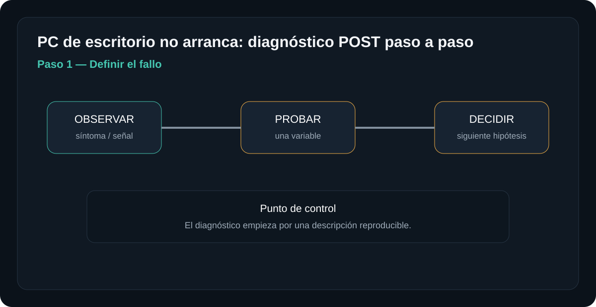
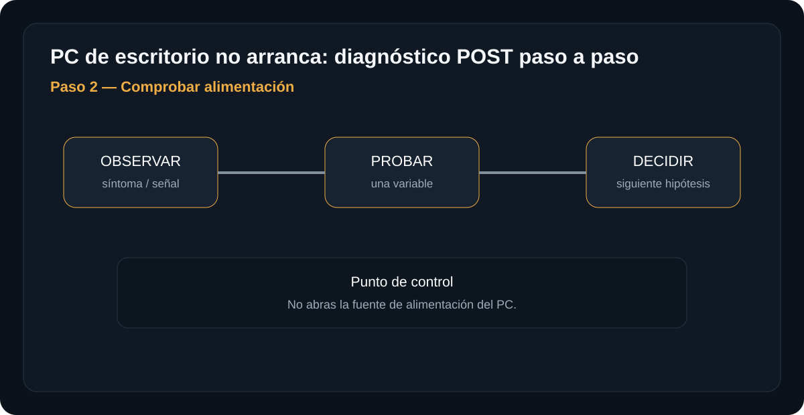
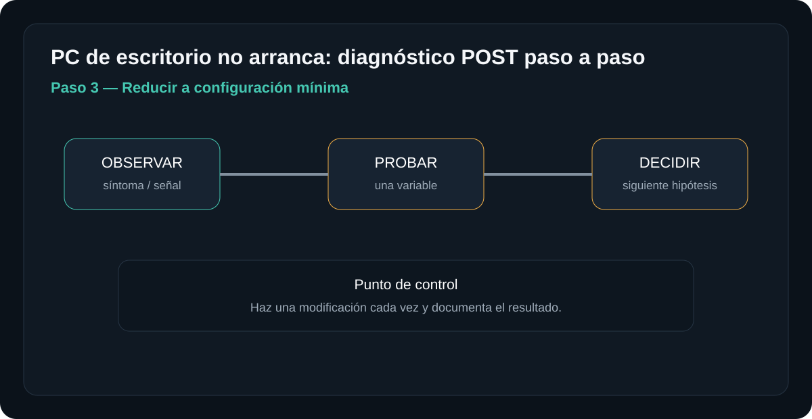
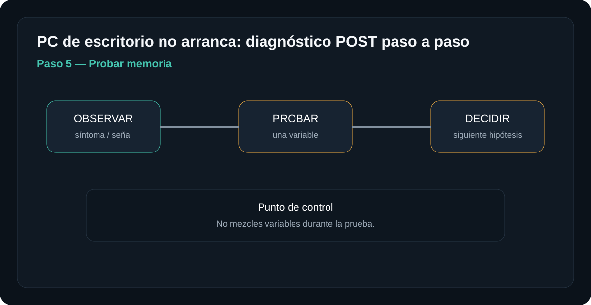
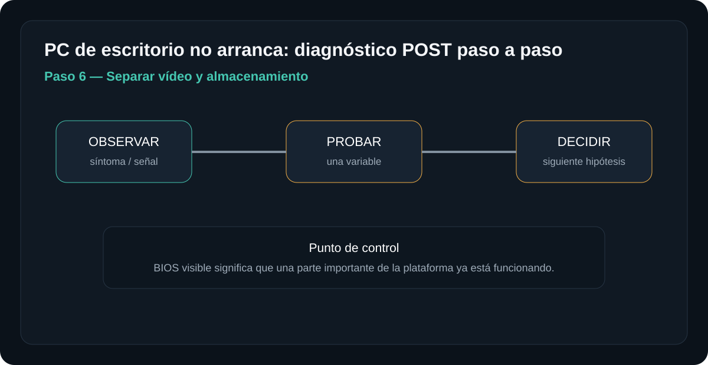

Introducción

La meta es llegar a una hipótesis con evidencia. No se trata de desmontar por desmontar: cada paso elimina una causa posible y prepara el siguiente.
Antes de empezar: seguridad
Retira alimentación y periféricos antes de abrir. No trabajes con una fuente de red abierta ni realices mediciones energizadas si no tienes formación e instrumental apropiados.
- Trabaja sobre una superficie limpia, seca y bien iluminada.
- Organiza tornillos y conectores por etapa.
- Fotografía conexiones antes de desconectarlas cuando desmontes.
- No fuerces una cubierta: una resistencia inesperada suele indicar una fijación pendiente.
Herramientas y material
Diagnóstico paso a paso
Definir el fallo
¿No enciende? ¿Enciende sin imagen? ¿Llega al logo? ¿Reinicia? Documenta el comportamiento exacto.

Qué hacer
- Sin luces ni ventiladores: no está llegando corriente a la placa (fuente, cable, toma o interruptor).
- Ventiladores giran un instante y se apagan: la fuente o la placa están cortando por protección (cortocircuito o sobrecarga).
- Ventiladores giran de forma continua pero no hay imagen: el arranque no supera el POST; el problema está en CPU, RAM o vídeo.
- Llega al logo o a Windows y luego reinicia o se cuelga: el POST terminó bien, la causa está más adelante (drivers, sistema operativo o temperatura bajo carga).
Anota el patrón exacto (luces, sonidos, pitidos, cuánto tarda en apagarse) antes de tocar nada: cada patrón manda a una rama distinta de esta guía.
Resultado esperadoCon el patrón identificado, puedes saltar directo al paso correspondiente (2 si no hay señales de vida, 4 si hay POST sin imagen, 6 si llega a BIOS) en vez de seguir todos los pasos en orden.
Comprobar alimentación
Revisa cable, toma, interruptor de fuente y conexiones principales con el equipo desconectado.

Qué hacer
- Prueba la toma de corriente con otro aparato para descartar el punto eléctrico, y confirma que el interruptor trasero de la fuente (0/1) esté en 1.
- Con el equipo desconectado, revisa que el conector de 24 pines a la placa y el de 4/8 pines junto al socket de CPU estén completamente encajados; se aflojan con facilidad al mover o limpiar el equipo.
- Si tienes la fuente fuera del equipo y algo de experiencia, puedes hacer la "prueba del clip": puentea el cable verde con uno negro del conector de 24 pines fuera de la placa. Si el ventilador de la fuente gira, hay arranque eléctrico (esto no confirma que el voltaje bajo carga sea correcto, solo que enciende).
No abras la carcasa metálica de la fuente para medir en el interior: los capacitores pueden retener carga peligrosa incluso desconectada de la corriente.
Resultado esperadoSi ni con el clip gira el ventilador de la fuente, esta es la sospechosa principal: prueba con una fuente de reemplazo antes de seguir. Si gira, continúa al paso 3.
Reducir a configuración mínima
Desconecta periféricos y dispositivos no necesarios. Mantén placa, CPU, refrigeración, un módulo de RAM y vídeo necesario según el equipo.

Qué hacer
- Desconecta discos, unidades ópticas, tarjetas adicionales y todo periférico salvo teclado y monitor.
- Deja solo placa, CPU con su disipador, un único módulo de RAM en el slot que indique el manual (a menudo no es el más cercano a la CPU) y vídeo integrado o una sola GPU si el CPU no tiene gráficos.
- Si el botón del gabinete no enciende el equipo, puentea brevemente los pines de "power switch" del panel frontal en la placa con un destornillador plano; es el mismo circuito que activa el botón.
El objetivo de reducir al mínimo es aislar: si en esta configuración arranca, algo del ensamblaje original —un periférico, una tarjeta o un contacto con la carcasa— causaba el fallo, no la placa base.
Resultado esperadoSi arranca en mínimo, reincorpora componentes de uno en uno (otra RAM, luego discos, luego tarjetas) hasta que el fallo reaparezca; el último añadido es el responsable. Si no arranca ni en mínimo, continúa al paso 4.
Interpretar POST
Escucha códigos o observa LEDs de diagnóstico si la placa dispone de ellos.

Qué hacer
- Si la placa tiene un display de dos dígitos o LEDs rotulados CPU/DRAM/VGA/BOOT, anota cuál queda fijo: indica en qué etapa se detuvo el arranque.
- Si no hay LEDs, cuenta los pitidos del altavoz interno de la placa (el speaker de placa, no el del gabinete). La cantidad y el ritmo forman un código, pero varían según el fabricante del BIOS (AMI, Award/Phoenix) e incluso según el modelo exacto.
- Busca la tabla de códigos del manual de tu placa específica; los códigos genéricos que circulan en internet no siempre coinciden con tu modelo.
Un LED fijo en "DRAM" casi siempre apunta a memoria mal asentada, no a una placa dañada: no cambies piezas antes de leer el código.
Resultado esperadoCPU fijo → revisa alimentación del socket. DRAM fijo → ve al paso 5. VGA fijo → prueba vídeo integrado o cambia de slot PCIe. BOOT fijo → la plataforma ya superó el POST, sigue al paso 6.
Probar memoria
Con el equipo apagado, prueba un módulo y una ranura siguiendo la documentación de la placa.

Qué hacer
- Con el equipo apagado y desenchufado, retira todos los módulos salvo uno y colócalo en el slot que recomiende el manual.
- Limpia los contactos dorados con una goma de borrar suave si llevan tiempo instalados, y limpia el slot con aire comprimido.
- Prueba cada módulo por separado en ese mismo slot antes de cambiar módulo y slot a la vez, para no mezclar dos variables en una sola prueba.
No cambies módulo y slot al mismo tiempo: si pruebas un módulo distinto en un slot distinto y falla, no sabrás cuál de los dos era el problema.
Resultado esperadoSi algún módulo individual permite arrancar, el que falló en las otras pruebas está dañado o es incompatible. Si ningún módulo enciende en ningún slot, el problema probablemente está en el controlador de memoria de la placa o CPU, no en la RAM.
Separar vídeo y almacenamiento
Si aparece BIOS pero no Windows, el problema se desplaza a almacenamiento/arranque. Si no aparece imagen, prioriza POST/vídeo.

Qué hacer
- Si llegaste a BIOS/UEFI, ya sabes que CPU, RAM y placa funcionan; el problema pasó a ser de arranque del sistema operativo.
- Confirma que el disco con el sistema aparezca listado en la sección Boot o Storage del BIOS. Si no aparece, revisa el cable de datos y el de alimentación del disco por separado, y prueba otro puerto SATA.
- Revisa el orden de arranque (Boot Order): un disco sano no arranca si el BIOS intenta primero un USB vacío o una tarjeta de red.
- Si el disco aparece pero Windows no carga, arranca desde un USB de instalación y usa "Reparar el equipo" antes de asumir que el disco está dañado.
Un disco que no aparece en el BIOS es un problema de conexión o del propio disco, no del sistema operativo instalado en él.
Resultado esperadoDisco visible + orden de arranque correcto + no arranca → problema de arranque de Windows, no de hardware. Disco no visible → revisa cables o prueba el disco en otro puerto antes de darlo por dañado.
Una prueba negativa no es un fracaso: es información. Registra qué se probó, con qué pieza o condición y qué cambió. Evita reemplazar varios componentes al mismo tiempo.
Tabla rápida de diagnóstico
| Síntoma | Primera comprobación | Siguiente hipótesis |
|---|---|---|
| Ventiladores no giran | Sin LEDs | Prioridad: alimentación |
| Ventiladores giran sin imagen | POST/LEDs | Prioridad: RAM/vídeo |
| BIOS aparece | No carga sistema | Prioridad: SSD/arranque |
Fuentes, licencias y referencias
- Fuente de imagen / referencia — revisa la licencia indicada en la ficha antes de redistribuir.
- Creative Commons BY-SA 4.0 cuando aplique a la imagen.
- iFixit / documentación de reparación como referencia técnica para PlayStation cuando corresponda.